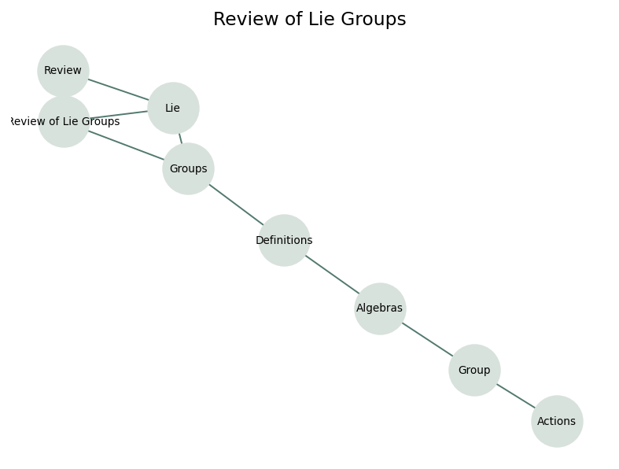

Introduction to Riemannian Manifolds
Appendix C: Review of Lie Groups
Smooth symmetry, infinitesimal generators, and group actions as reusable tools for Riemannian geometry.
Notebook Grounding
Source span: printed pages 407-427. The assigned notebook focuses on definitions, Lie algebras, and group actions on manifolds.
